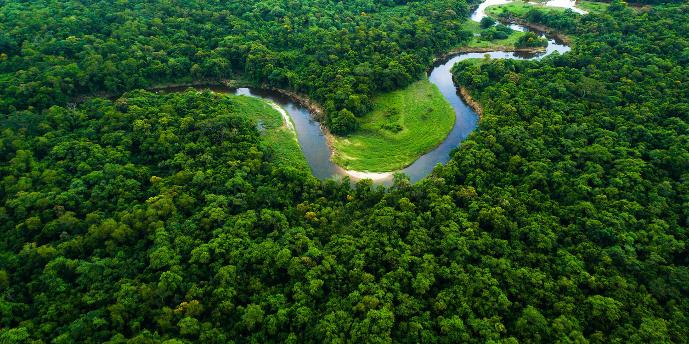
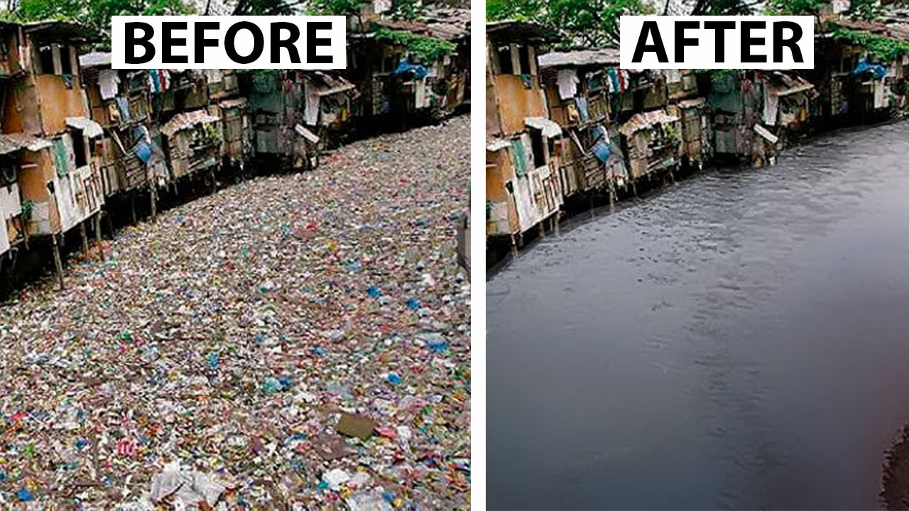
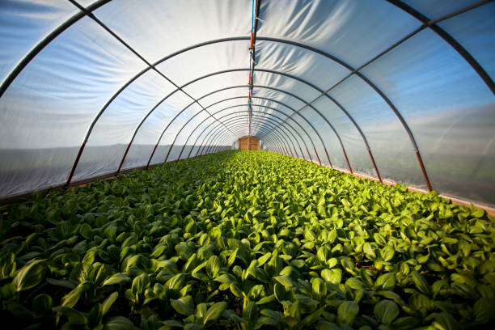

Change unfolds like a beautiful tapestry

Successful plantation

Starvation Gone, Children Fed

Purification of most toxic river.

Social work and community support are vital today, helping people overcome challenges,
fostering connection, and building stronger, more caring communities.
We promote sustainability through tree plantations, deforestation awareness, charity support, waste management education, clean water access, and climate change advocacy.
Organizing community-based tree planting initiatives.
Supporting environmental causes and providing resources to underprivileged communities.
Working to provide clean drinking water to areas affected by scarcity and contamination.
Raising awareness about climate change and encouraging eco-friendly practices to protect the planet for future generations.
Our platform brings together volunteers, NGOs, and communities to drive positive change. We help you discover opportunities to contribute, connect with like-minded people, and make a difference in your community and the world. Whether you want to donate time, skills, or resources, we provide a space for you to engage and make an impact and We work towards a sustainable and compassionate future through impactful initiatives.
Explore volunteer openings tailored to your interests and skills.
Make a positive impact in your community.
Build relationships with trusted NGOs and social organizations that align with your passion for change.

Work with like-minded individuals on projects that matter and share knowledge to drive collective growth.
The experience I've gained has been invaluable. I've developed new skills and gained a deeper understanding of the issues facing our community.
"Thanks to this platform, I found a local NGO to work with, and together we’ve transformed our community's education system."
"The connections I made here helped me start a project to provide clean water in rural areas. We’ve made a lasting impact!"
"This platform connected me with amazing people who share my passion for environmental sustainability."